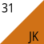
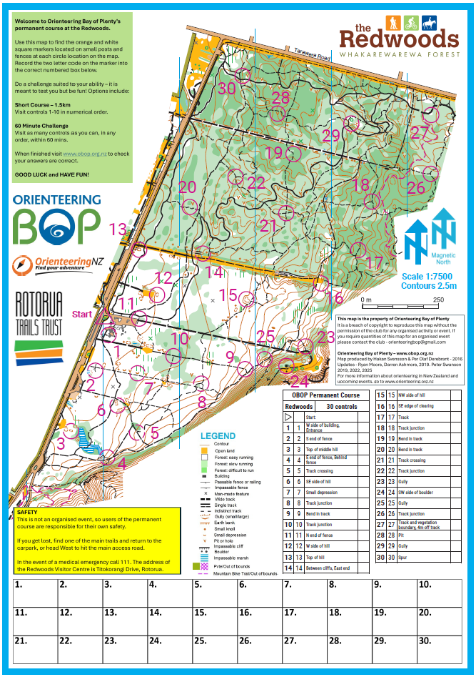

Resources
Permanent Course

OBOP (Orienteering Bay Of Plenty) has a permanent course set up in the Redwoods forest.
This course is free to use for casual users. Rather than finding flags, insted you are looking for orange and white plastic squares, as showen in image on right ⟶
Each Checkpoint has a unique two letter combination to prove you have been there rather than clippers or Sport-ident.
Answers for combination can be found
HERE:
Note: Any larger groups, or people wanting to use this as part of an organised event must contact the club - orienteeringbop@gmail.com
For more infomation go to https://www.obop.org.nz/redwoods-permanent-course.html

Helpful Things
Link to Orienteering Legend: HereOther Websites You Might Want To Look At:
Orienteering Bay Of Plenty:
https://www.obop.org.nz/
Orienteering New Zealand:
https://www.orienteering.org.nz/